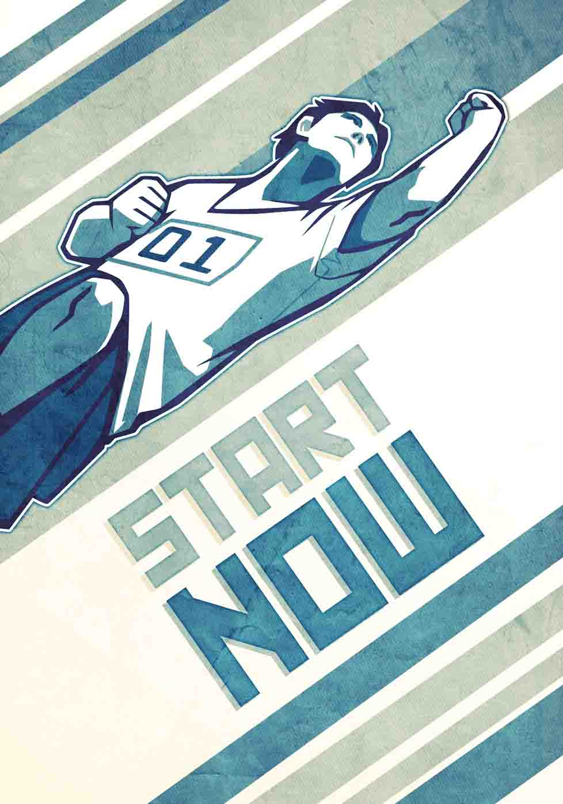

What is one health action you can do now that you can do again tomorrow?
Try one of these:
The mental barrier to getting started is often the toughest one. Power through it today.
Once you overcome the inertia of getting started, make a plan to reach your health goals.
Go! Go! Go!
